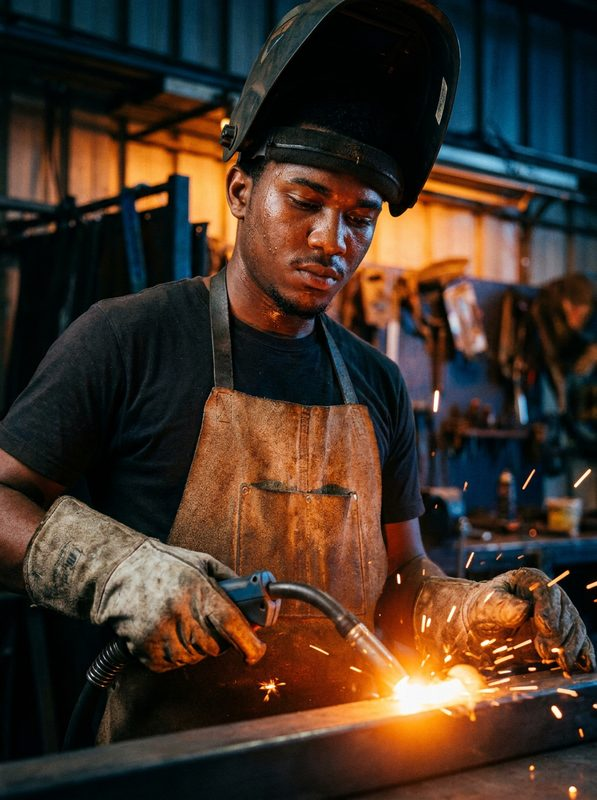
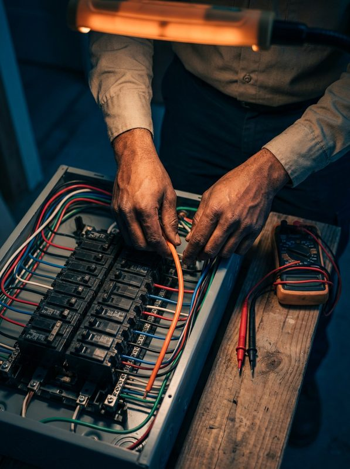
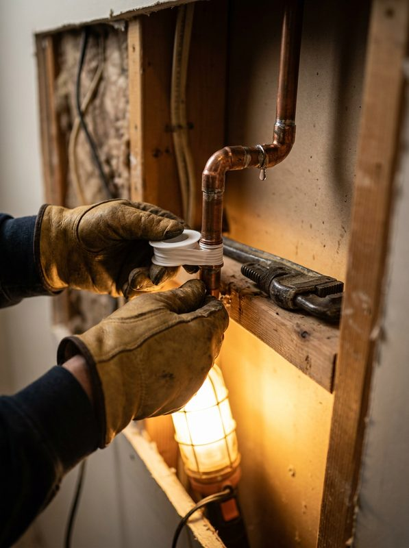
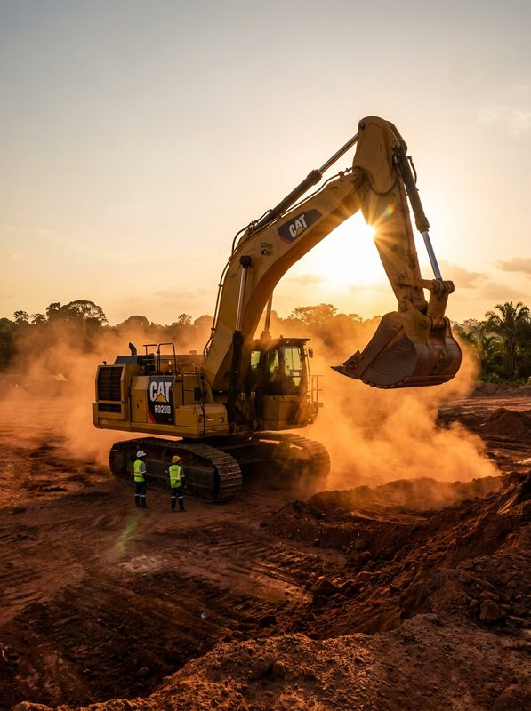

Programme imagery, graduate portraits, training-centre interiors. Filter by category — all photos curated from BIT's ongoing documentation across the ten regions.




The most recent photos and posts are published on the official BIT Guyana Facebook page.
We link out rather than embed, so nothing on this page shares your visit with third parties. See the latest photos directly on Facebook.
Open the BIT Guyana Facebook page ↗ facebook.com/Board-of-Industrial-Training-Guyana